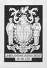
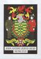
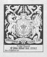
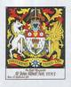
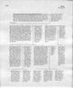
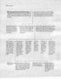

heraldic plates
|

stallplate (mono)
40k
|

stallplate
82k
|
|
|

stallplate (mono)
50k
|

stallplate
104k
|
ARMS: Ermine a Mimosa flower ensigned with the Royal Crown proper on a Chief Gules a Heart Or between two pierced Mullets of seven points Argent. CREST: A wedgetailed Eagle and a Bird of Paradise respectant proper supporting a Sword point upward Argent hilt and pommel Or. SUPPORTERS: On the dexter side a Unicorn Argent crined and unguled Or and on the sinister side a Griffin also Or each supporting a Sword point downwards Argent hilt and pommel Gold. |
{kind=link}
{kind=link}
{kind=link}
{kind=link}
These are non-digital designs for enamelled metal stall-plates for Knights of The Most Honourable Order Of The Bath and The Most Distinguished Order Of St Michael And St George.
Drawn with a Rotring pen on CS10 paper. Coloured with gouache.
Situated in Westminster Abbey and St Pauls Cathedral, London.
calligraphic records
|

scrivening 1
307k
|

scrivening 2
229k
|
{kind=link}
{kind=link}
These are non-digital scrivenings of pedigree records for the College Of Arms. Just small, one-page examples—sometimes they would stretch over five pages.
Original document size: 282mm x 393mm, image resolution: 3.937 pixels per mm, letter x-height: 3mm, line height: 5.5mm. (Approximately actual size on an average screen.)
Using:
- Mitchell Copperplate angled nib — quite good, medium-fine
- elegantly carved wooden Paul Petzold holder — rather expensive, but pleasing (an angled nib permits a much wider choice of holders)
- Higgins Eternal ink — fine, dark, permanent
- College Of Arms' paper — they had had a limited stock made for them (have they run-out yet?)
Now my kit would be:
Suppliers:
Layout measures would be: incline of 57.3 degrees (1 radian) from horizontal, and one of: